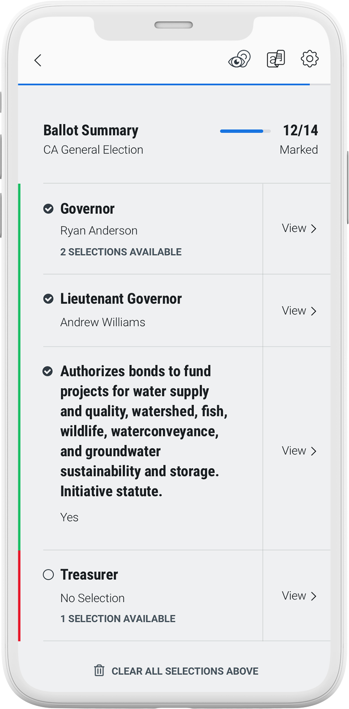
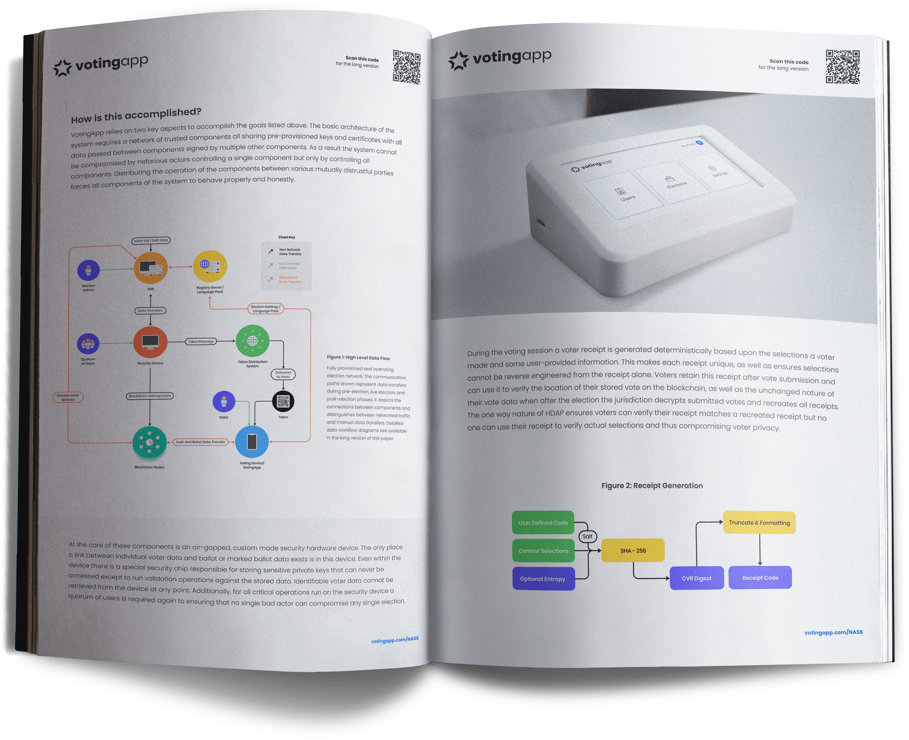

According to a recent ABC News poll, just 20% of Americans claim to be “very confident” in the election system. It’s time to modernize our election systems to meet the needs of American voters. With VotingApp, you can cast your ballot from your smartphone at your convenience without sacrificing privacy or security.


How it works
Review technical details of our end-to-end verifiable mobile voting system.
Read our white paper to learn how we solve the problem of data verifiability while maintaining voter privacy.